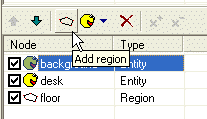
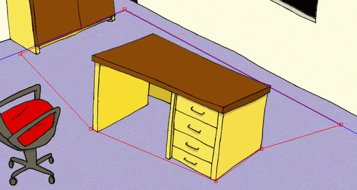
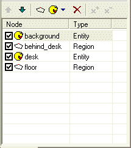
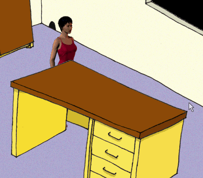
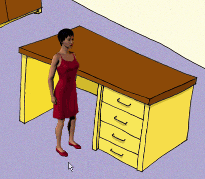

OK, now the real fun begins. We will learn how the scene layout works. We already know that the order of scene nodes is important and it affects the drawing order of the scene contents.
Open our “MyScene.scene” file in SceneEdit.
We have two entities (“background” and “desk”) and one “walkable” region (“floor”). We need the “desk” entity to overlap the actor whenever the actor stands behind the desk. The solution is adding another region.
Click the “Add region” button. A new scene node will be added, its name is preset to “new region”.

Change the name for example to “behind_desk”. Now we need to change the shape of this region to cover the area on the floor, which is “behind the desk”. Edit the region to match the shape on the picture:

The last we have to do is to sort the scene nodes in a correct order (use the up and down arrow buttons to move the scene nodes up or down):

What did we achieve? The engine will draw the scene in a following way:
1) draw the “background” entity first
2) then draw all the actors standing within the “behind_desk” region
3) then draw the “desk” entity
4) then draw all the actors standing within the “floor” region
In other words: if the actor stands within the “behind_desk” area, he will be drawn before the desk; otherwise he will be drawn after the desk.
Try it yourself. Save the scene, quit SceneEdit and click the “Run game” button in the ProjectMan. Select the “MyScene” item and try to move the actor to different places within the scene. He should be correctly overlapped by the desk. For now, we will ignore the fact that the actor can walk through the desk. We will handle this problem in Step 4: Blocked regions.


I hope I made it clear enough; this was the most difficult part of this tutorial. The rest will be easy :-) Make sure you understand the importance of the scene nodes ordering.